Figura 1
Índice
Projeto/Atividade/Operação Especial 6
Anexo I – Demonstrativo da Receita e Despesa Segundo as Categorias Econômicas 12
Anexo 2 – Relatório das Fontes da Receita 13
Anexo 4 – Relatório dos Elementos de Despesa 14
Anexo 2 – Resumo da Receita 15
Anexo 2 – Resumo da Despesa 16
Anexo 2 – Demonstrativo da Despesa por Órgão/Unidade 17
Anexo 6 – Programa de Trabalho Orgão/Unidade 19
Anexo 8 – Demonstrativo da Despesa por Função/Sub-função/Progr. 20
Anexo 9 – Demonstrativo da Despesa por Órgão/Função 21
Anexo 7 – Programa de Trabalho do Governo 23
Demonstrativo da Despesa por Projeto/Atividade/Elemento 24
Demonstrativos do Orçamento 27
Totalização do Orçamento da Despesa 28
Despesa por Órgão/Unidade/Elemento 29
Diferença dos Recursos Orçados 30
Relatório de Suplementações 34
MÓDULO ORÇAMENTO
Esta opção possibilita a inclusão do código e descrição dos tipos de recursos utilizados para receita, despesa e das contas do Sistema Financeiro do Plano de Contas Padrão do TCERS, de acordo com o art. 8º da LC 101, de 04-05-2000, fls 116 e 117 da Portaria STN 586 de 29-08-2005, art. 8º da Resolução TCERS nº 567, de 27-04-2001 e art. 8º da Resolução TCERS 535, de 10-11-1999. Para proceder na inclusão de um código de recurso basta incluir o código numérico do recurso, a descrição do tipo do recurso, o código do Tribunal, que é o mesmo código numérico do recurso e a descrição da finalidade do recurso, e clicar no botão incluir para executar o procedimento.
Figura
1
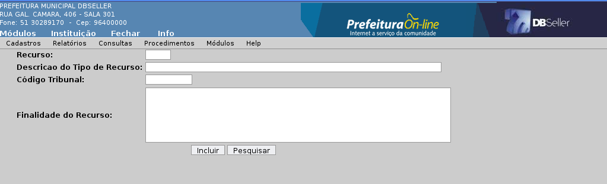
Figura
2
Possibilita alterar os dados do tipo de recurso incluídos no sistema, via processo executado anteriormente, após executar a alteração desejada clicar no botão alterar para executar o procedimento.
Esta opção possibilita a exclusão de todos os dados incluídos no cadastro de recursos, a não ser que o código a ser excluído esteja sendo utilizado em alguma dotação, conta bancária ou receita, após encontrar o código a ser excluído clicar no botão excluir.
Esta opção possibilita a inclusão do código das funções bem como as suas descrições, após incluído o código da função e sua descrição, clicar no botão incluir para executar o processo.

Figura 3
Nesta opção podem ser alterados os códigos e as descrições das funções incluídos no sistema, para executar o procedimento após efetuar a alteração clicar no botão alterar.
Esta opção possibilita a exclusão das funções cadastradas, desde que a mesma não esteja sendo utilizada, após a escolha da função a ser excluída, basta clicar no botão exclusão para executar o procedimento.
Esta opção possibilita a inclusão do código da subfunção e a sua descrição, sendo que após digitar o número do código e escrita a descrição da mesma basta clicar no botão incluir para executar o procedimento.

Figura
4
Nesta opção é possível alterar as sub-funções cadastradas no sistema, bastando para isto encontrar o código a ser alterado, proceder na alteração e clicar no botão alterar para executar o procedimento.
Esta opção possibilita a exclusão do código desejado, basta encontrar este código e clicar no botão excluir para executar o procedimento.
Esta opção possibilita a inclusão da codificação e descrição dos programas de governo, após digitar o código e a nomenclatura desejados basta clicar no botão incluir para que o procedimento seja executado.

Figura
5
Nesta opção pode ser alterado o código e a descrição do programa cadastrado, bastando efetuar a alteração desejada e após clicar no botão alterar para que o procedimento seja executado.
Esta opção permite a exclusão de código e descrição de programas cadastrados, desde que não esteja sendo utilizado, para executar o procedimento basta escolher o código a excluir e após clicar no botão excluir para executar o procedimento.
Nesta opção são incluídas as codificações e descrições dos P/A/OPE, para isto devem ser digitadas as opções desejadas sendo que após deve-se clicar no botão incluir para concluir o procedimento. Sabendo que o sistema sempre coloca o primeiro dígito do código incluído, quando for projeto inicia com o número “um”, quando atividade inicia com o “dois” e quando for operação especial com o “zero”.

Figura
6
Esta opção possibilita alterar o código e a descrição dos códigos cadastrados, sendo que após executar a alteração desejada basta clicar no botão alterar para executar o procedimento.
Nesta opção temos a possibilidade de excluir os códigos cadastrados, bastando para isto localizar o código desejado e clicar no botão excluir para execução do procedimento.
Esta opção é um simples cadastro do código de Órgão e a sua descrição, de fácil entendimento e operacionalização, bastando preencher os campos solicitados e clicar no botão incluir para executar o procedimento.

Figura
7
Nesta opção, há a possibilidade de alterar os campos preenchidos e relacionados ao respectivo órgão, após executadas as alterações pretendidas basta clicar no botão alterar para que o procedimento seja executado.
Esta opção possibilita a exclusão do órgão e todos os seus dados cadastrados, bastando a escolha do órgão e após clicar no botão excluir para que o procedimento seja executado.
Esta opção é um simples cadastro do código de Unidade e a sua descrição, de fácil entendimento e operacionalização, bastando preencher os campos solicitados e clicar no botão incluir para executar o procedimento. Tendo o cuidado de, se esta unidade não possuir CNPJ próprio deixar o campo respectivo em branco, caso possua, incluir o CNPJ, pois o sistema gerador dos arquivos do PAD irá buscar primeiramente o numero do CPJ deste campo para preencher dentro do txt para análise do PAD. Deve-se ter cuidado com o campo Identificador do Tribunal, pois, este campo tem um tratamento específico determinado pelo TCERS conforme demonstrativo abaixo.
01 - Prefeitura Municipal
02 - Câmara Municipal
03 - Secretaria da Educação
04 - Secretaria da Saúde
05 - RPPS (exceto Autarquia)
06 - Autarquia (exceto RPPS)
07 - Autarquia (RPPS)
08 - Fundação
09 - Empresa Estatal Dependente
10 - Empresa Estatal Não Dependente
11 – Consórcio
12 – Outras
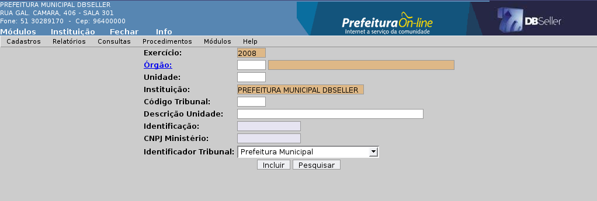
Figura
8
Esta opção permite alterar a codificação disponível dentro do cadastro de unidades, após as modificações desejadas, basta clicar no botão “alterar” para que o procedimento seja executado.
Nesta opção tem-se a possibilidade de excluir o código cadastrado, encontrando o código desejado e clicando no botão excluir para que o procedimento seja executado.
Nesta opção devem ser cadastradas as leis que serão utilizadas para inclusão dos projetos de suplementação, devendo ser incluída o número da lei, a descrição , e a data final e inicial, ao final do cadastramento basta clicar no botão incluir para executar o procedimento.

Figura
9
Nesta opção temos a possibilidade de alterar as opções constantes nas leis que foram cadastradas para posterior utilização no processo de suplementação orçamentária dentro do módulo orçamento.
Esta opção permite a exclusão das leis cadastradas, que seriam utilizadas para suplementação, mas que não mais serão usadas, para executar o procedimento basta encontrar a lei que será escolhida e clicar no botão exclusão para que o procedimento seja executado. Tomando o cuidado de verificar se a lei cadastrada não foi utilizada para algum procedimento.
Nesta opção de cadastro deve-se incluir o código estrutural da receita no primeiro campo solicitado, ou efetuar a pesquisa pela âncora da página se não souber o respectivo código, para logo a seguir efetuar o relacionamento com as receitas analíticas que serão desdobradas nos percentuais de acordo com a legislação vigente.
Quando a operação for de alteração, a receita que deverá ser buscada em primeiro lugar, sempre será a última conta sintética da grupo desejado, sendo a seguir selecionadas as respectivas analíticas e incluídos os valores percentuais corretos, sem ponto ou vírgula. Para exemplificar podemos demonstrar da seguinte forma: se o valor a ser lançado em determinada receita deve ser o equivalente a vinte e cinco por cento do total arrecadado, o numero a ser digitado no espaço próprio será o 25 pura e simplesmente. Após a inclusão dos códigos e valores desejados basta clicar no botão incluir para executar o procedimento.
Quando a operação for de exclusão, deverá ser localizada na tela a respectiva conta sintética, clicar na linha correspondente que na tela serão demonstradas as contas relacionadas com a escolhida, após basta clicar no botão excluir para que o procedimento seja executado.

Figura
10

Figura
11
Pode ser emitido com a seguinte seleção:
Consolidado ou Individualmente cada Instituição
BALANÇO( valores executados), empenhado, liquidado ou pago;
ORÇAMENTO (valores previstos);
Período: Data Inicial e Data Final.
Para impressão modo BALANÇO ou ORÇAMENTO, clicar no botão processar na respectiva caixa do modo.

Figura
12

Figura
13
Emite o relatório da receita Segundo as Categorias Econômicas , conforme a Lei 4.320.

Figura
14

Figura
15
Emite o relatório com os códigos estruturais dos elementos de despesa.

Figura
16
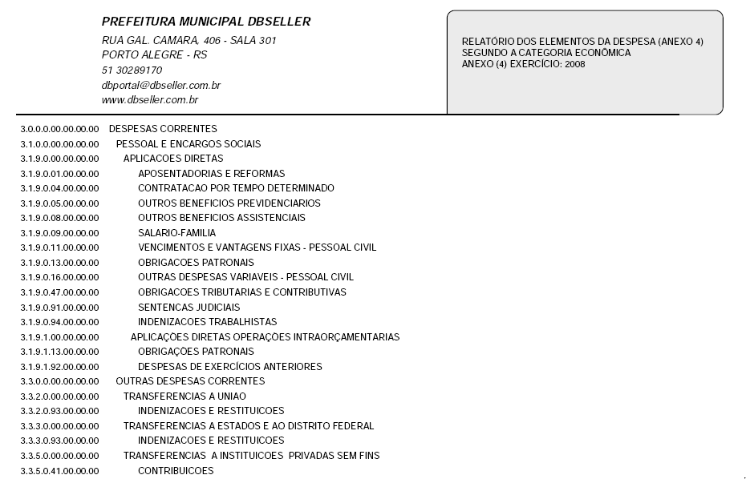
Figura
17
Este item possibilita a emissão do Anexo II – Resumo da Receita com a seguinte seleção:
Consolidado ou Individualmente cada Instituição
BALANÇO( valores executados), empenhado, liquidado ou pago;
ORÇAMENTO (valores previstos);
Período: Data Inicial e Data Final.
Para impressão modo BALANÇO ou ORÇAMENTO, clicar no botão processar na respectiva caixa do modo.
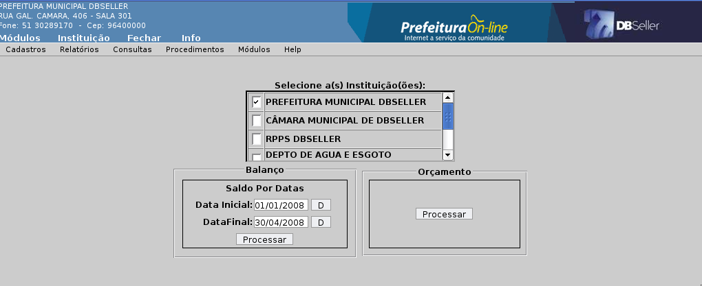
Figura
18
Esta opção permite a geração e impressão do Anexo II – Resumo da Despesa, possibilitando a seguinte seleção:
Consolidado ou Individualmente cada Instituição
ÓRGÃO, UNIDADE ou ELEMENTO, clicando no botão selecionar;
BALANÇO( valores executados), empenhado, liquidado ou pago;
ORÇAMENTO (valores previstos);
Período: Data Inicial e Data Final.
Para impressão modo BALANÇO ou ORÇAMENTO, clicar no botão processar na respectiva caixa do modo.

Figura
18
Esta opção permite a geração e impressão do Anexo II – Resumo da Despesa, possibilitando a seguinte seleção:
Consolidado ou Individualmente cada Instituição
ÓRGÃO, UNIDADE ou ELEMENTO, clicando na opção de escolha do nível, a seguir selecionando a opção de filtro desejada;
BALANÇO( valores executados), empenhado, liquidado ou pago;
ORÇAMENTO (valores previstos);
Período: Data Inicial e Data Final.
Para impressão modo BALANÇO ou ORÇAMENTO, clicar no botão processar na respectiva caixa do modo.
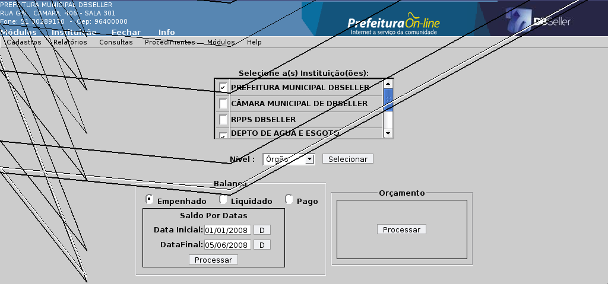
Figura
19

Figura
20

Figura
21
Esta opção permite a geração e impressão do Anexo 6 , Programa de Trabalho por Órgão/Unidade.
Consolidado ou Individualmente cada Instituição
Filtro: ÓRGÃO, UNIDADE, FUNÇÃO, SUBFUNÇÃO, PROGRAMA, PROJETO/ATIVIDADE, ELEMENTO ou RECURSO clicando na opção de escolha do nível, a seguir selecionando a opção de filtro desejada;
Agrupamento: GERAL, ÓRGÃO ou UNIDADE
BALANÇO( valores executados), empenhado, liquidado ou pago;
ORÇAMENTO (valores previstos);
Período: Data Inicial e Data Final.
Para impressão modo BALANÇO ou ORÇAMENTO, clicar no botão processar na respectiva caixa do modo.
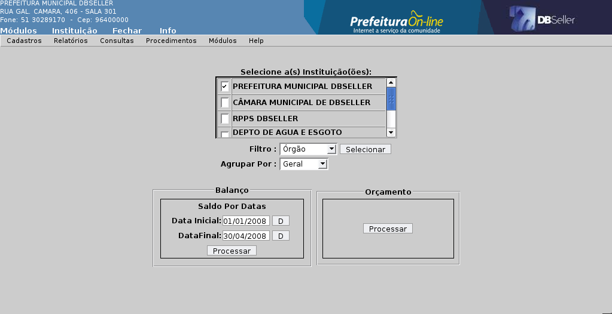
Figura 22
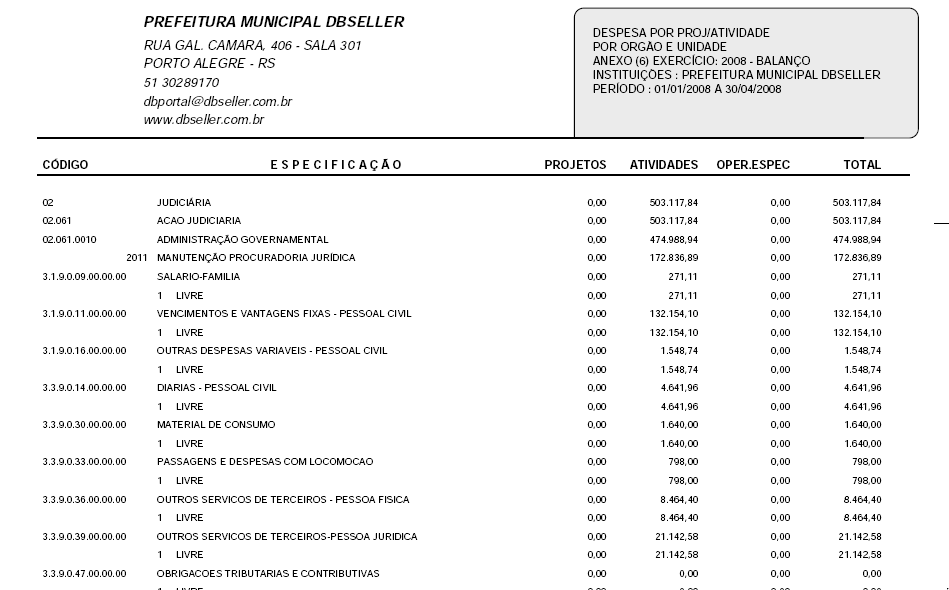
Figura 23
Esta opção permite a geração e impressão do Anexo 8 , Demonstrativo da Despesa por Função, Sub-função e Programa, com as seguintes possibilidades:
Consolidado ou Individualmente cada Instituição
Filtro: ÓRGÃO, UNIDADE, FUNÇÃO, SUBFUNÇÃO, PROGRAMA, PROJETO/ATIVIDADE, ELEMENTO ou RECURSO clicando na opção de escolha do nível, a seguir selecionando a opção de filtro desejada;
Agrupamento: GERAL, ÓRGÃO ou UNIDADE
BALANÇO( valores executados), empenhado, liquidado ou pago;
ORÇAMENTO (valores previstos);
Período: Data Inicial e Data Final.
Para impressão modo BALANÇO ou ORÇAMENTO, clicar no botão processar na respectiva caixa do modo.
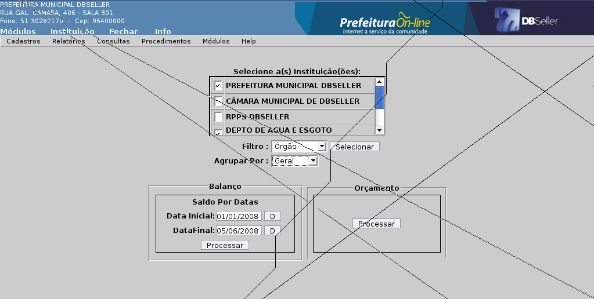
Figura
24

Figura
25
Esta opção permite a geração e impressão do Anexo 9, Demonstrativo da despesa por Órgão/Função, com as seguintes possibilidades:
Consolidado ou Individualmente cada Instituição
Filtro: ÓRGÃO ou FUNÇÃO clicando na opção de escolha do nível, a seguir selecionando a opção de filtro desejada;
BALANÇO( valores executados), empenhado, liquidado ou pago;
ORÇAMENTO (valores previstos);
Período: Data Inicial e Data Final.
Para impressão modo BALANÇO ou ORÇAMENTO, clicar no botão processar na respectiva caixa do modo.

Figura
26

Figura
27
Esta opção permite a geração e impressão do Anexo 7 – Programa de Trabalho do Governo, com as possibilidades a seguir:
Consolidado ou Individualmente cada Instituição
Filtro: ÓRGÃO, UNIDADE, FUNÇÃO, SUBFUNÇÃO ou PROGRAMA clicando na opção de escolha do nível, a seguir selecionando a opção de filtro desejada;
BALANÇO( valores executados), empenhado, liquidado ou pago;
AGRUPAR : Geral, Órgão ou Unidade
ORÇAMENTO (valores previstos);
Período: Data Inicial e Data Final.
Para impressão modo BALANÇO ou ORÇAMENTO, clicar no botão processar na respectiva caixa do modo.

Figura
28
Figura
29
Este relatório demonstra a despesa segregada em projeto, atividade ou operação especial , detalhando dentro de cada um deles as despesas até o nível de elemento.
Consolidado ou Individualmente cada Instituição
Filtro: ÓRGÃO, UNIDADE, PROJETO/ATIVIDADE clicando na opção de escolha do nível, a seguir selecionando a opção de filtro desejada;
AGRUPAR : Geral, Órgão ou Unidade
BALANÇO( valores executados), empenhado, liquidado ou pago;
ORÇAMENTO (valores previstos);
Período: Data Inicial e Data Final.
Para impressão modo BALANÇO ou ORÇAMENTO, clicar no botão processar na respectiva caixa do modo.
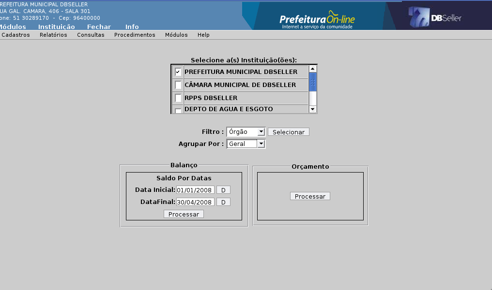
Figura
30
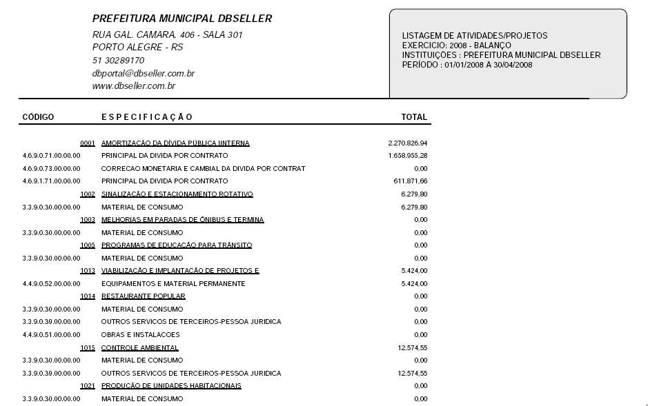
Figura
31
Estes relatórios demonstram somente a relação dos códigos cadastrados para serem utilizados no módulo, em relação à preparação para execução orçamentária, tanto no que diz respeito a previsão do despesa como da execução da receita.

Figura
32
Este demonstrativo é um tipo de extrato que demonstra os saldos das dotações orçamentárias em quatro colunas, sendo a primeira coluna a demonstração o saldo inicial, a segunda o saldo anterior , a terceira o saldo reservado e a quarta e ultima o saldo atual, sendo que todos os valores demonstrados são em relação ao período inicial e final solicitado. O demonstrativo permite a utilização de filtragem por nível de Órgão até o recurso, passando por toda a classificação funcional utilizada na confecção do Orçamento, importante salientar que deve ser emitido logado em cada uma das respectivas instituições.
Filtro: ÓRGÃO, UNIDADE, FUNÇÃO, SUBFUNÇÃO, PROJETO/ATIVIDADE, ELEMENTO ou RECURSO, clicando na opção de escolha do nível, a seguir selecionando a opção de filtro desejada;
TROCA DE PAGINA POR ÓRGÃO: Sim/Não;
TROCA DE PAGINA POR UNIDADE: Sim/Não;
LISTAR SUB-ELEMENTOS: Sim/Não
Período: Data Inicial e Data Final.
Para impressão botão processar.
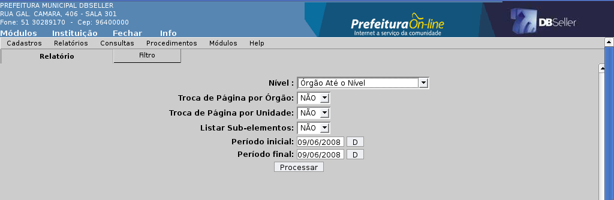
Figura
33
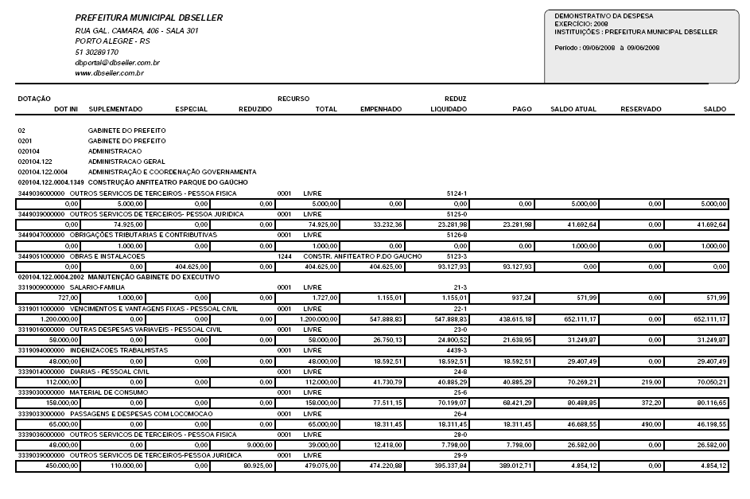
Figura
34
Este relatório demonstra os valores orçados, podendo ser emitido a partir de níveis que iniciam com o Órgão até o Recurso;
Seleção de Instituições;
Nível: Órgão ate Recurso, não esquecendo que o botão de seleção deve ser utilizado, caso contrário o relatório será emitido em branco, após utilizar o botão processar para geração e emissão do relatório.

Figura
35
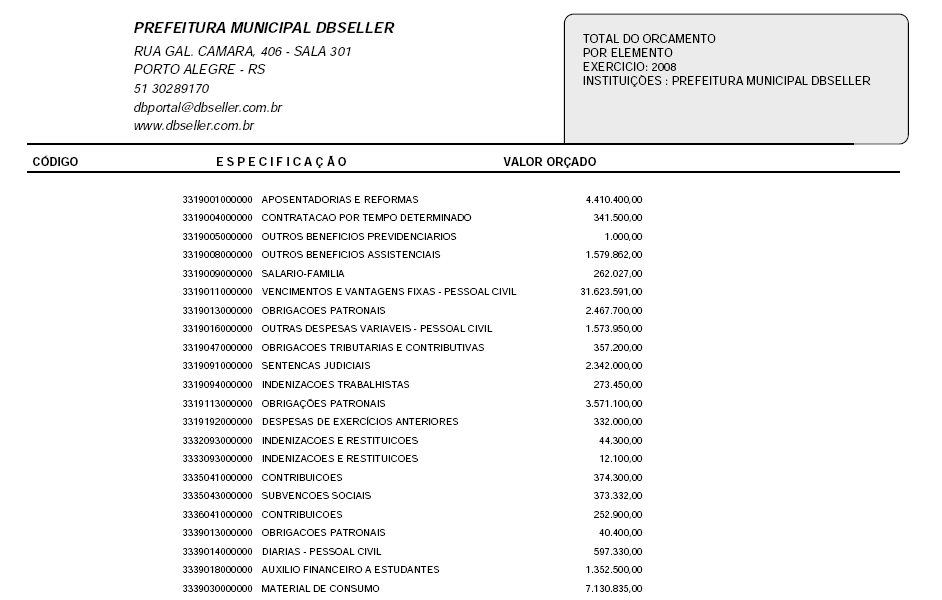
Figura
36
Relatório que tem a finalidade de demonstrar a despesa resumida, trazendo os valores conforme o filtro escolhido pelo usuário, empenhado, liquidado ou pago tendo como base a data em que encontra-se o sistema, demonstrando mês a mês os valores .
Seleção da Instituição;
Filtro por Órgão ou Unidade, clicando no botão selecionar para efetuar a escolha;
Agrupar: Sim/Não;
Totalizar: Geral, Função, Sub-função, Programa, Projeto/Atividade ou Elemento;
Valores: Empenhado, Liquidado ou Pago.

Figura
37

Figura
38
Este relatório demonstra a diferença do valor previsto da receita para o valor fixado da despesa, caso ocorra tal diferença, se não ocorrer o valor demonstrado será zero. Possibilita a opção de escolha de instituição sem a necessidade de estar logado na instituição. Para impressão do relatório basta clicar no botão processar.

Figura
39
Esta opção emite o projeto de suplementação previamente cadastrado, com as dotações que serão acrescidas e demonstram os valores que servirão de cobertura para abertura do crédito, quaisquer que sejam eles, obviamente dentro do que está elencado no art. 43 da Lei 4,320/64 de 17 de março de 1964. Sabendo o numero do projeto, o usuário pode digitar diretamente o valor no campo apropriado, caso não saiba, basta clicar na âncora PROJETO DE LEI, que abrirá uma tela com todos os projetos inclusos, podendo assim clicar sobre a linha em que se encontra o projeto desejado, logo em seguida deverá escolher entre os quatro modelos possíveis conforme o “combobox” possibilita.
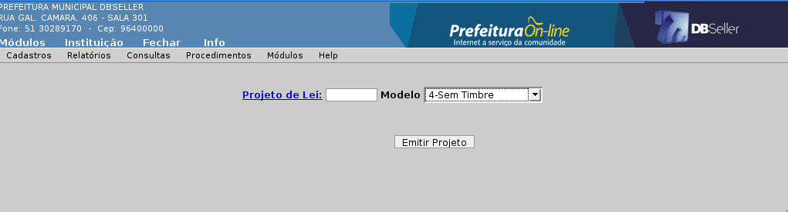
Figura
40
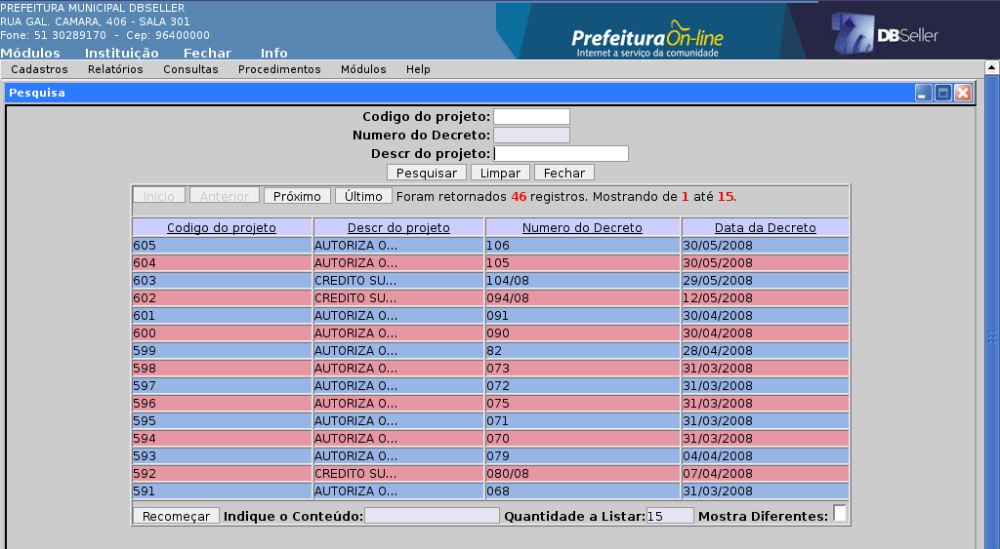
Figura
41
Este demonstrativo possibilita a emissão de uma relação de projetos incluídos, com as seguintes opções:
Consolidado ou Individualmente cada Instituição
Seleção de Instituição;
PERÍODO : Data inicial e Data Final;
LISTAR DOTAÇÕES: Sim/ Não;
TIPO: Processados, Não Processados ou Todos
Período: Data Inicial e Data Final.
Código da Lei.

Figura
42

Figura
43
Este é um demonstrativo mais abrangente no sentido de listar as suplementações efetuadas dentro de um determinado período, possibilitando as seguintes marcações:
Na aba filtro pode ser marcado o Órgão, Unidade, Função, Sub-função, Programa, Projeto/Atividade, elemento, recurso e a dotação.
Retornando à aba relatório podem ser executadas as seguintes seleções:
INSTITUIÇÃO;
PERÍODO: Inicial e Final;
TIPO: Decreto ou Lei;
SUPLEMENTAÇOES: Processadas, Não Processadas ou todas;
IMPRIMIR FILTRO: Sim/Não;
TIPOS DE SUPLEMENTAÇÃO: Por Redução, Operação de Crédito, etc.
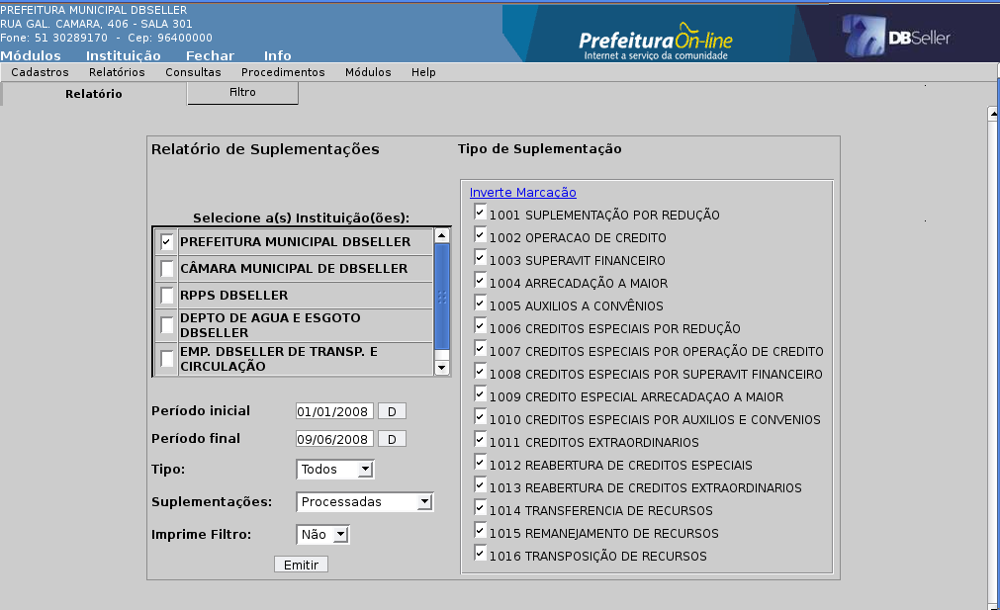
Figura
44
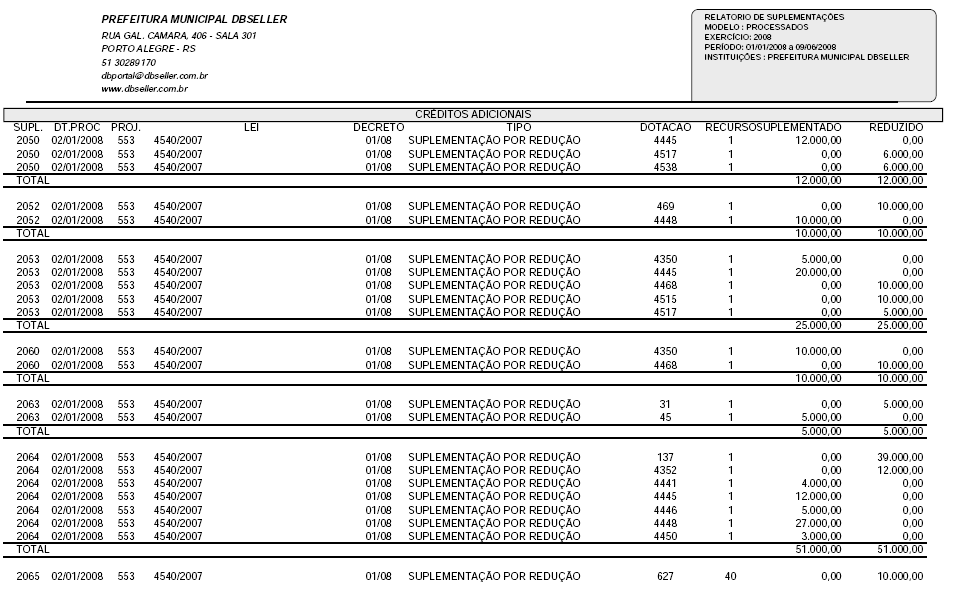
Figura
45
Demonstra o total de suplementações por recurso dentro de um determinado período, possibilitando as seguintes escolhas:
SELEÇÃO DE INSTITUIÇÕES;
PERÍODO: Inicial e Final;
TIPO DO PROJETO: Todos, Lei ou Decreto;
STATUS: Processado, Não Processado, Todos;
Para gerar e imprimir clicar no botão RELATÓRIO POR RECURSO.

Figura
46

Figura
47
Emite relatório das reservas de saldo, tanto as manuais como as reservas efetuadas automaticamente pelo sistema, possibilidades de filtragem:
Aba Relatório
NÍVEL: de Órgão até Recurso;
Para gerar e imprimir o relatório basta clicar no botão PROCESSAR.
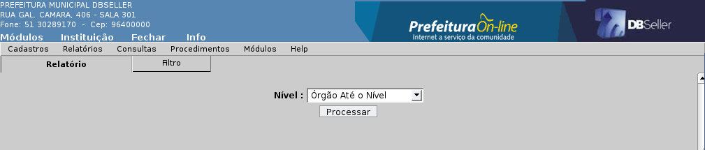
Figura
48

Figura
49
Esta consulta possibilita a visualização do saldo da despesa em vários formatos, tendo como default sempre a data presente, podendo ser obtido com os seguintes filtros:
REDUZIDO DA DOTAÇÃO;
ESTRUTURAL COMPLETO DA DESPESA;
ÓRGÃO;
FUNÇÃO;
SUBFUNÇÃO;
PROGRAMAS;
PROJETO/ATIVIDADES;
ELEMENTO;
TIPO DE RECURSO.
Todos estes filtros podem ser utilizados individualmente ou conjuntamente, obviamente que, respeitando a lógica da confecção do orçamento. Demonstra todos os valores importantes relacionados a despesa, uma com os valores do mês e outra com o acumulado até o mês, dando a oportunidade da troca do mês e impressão do relatório.

Figura
50
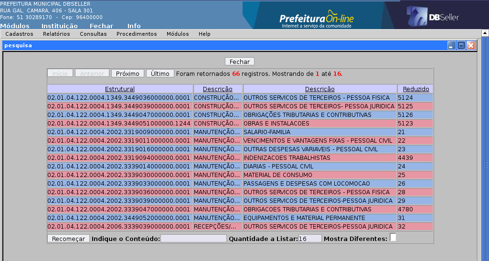
Figura
51
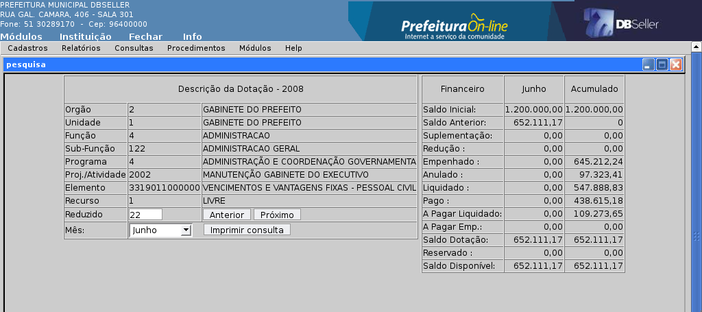
Figura
52
Demonstra o saldo da receita escolhida, dentro de uma relação visualizada na tela, possibilitando na tela seguinte a escolha de período inicial e final e a troca da receita clicando nos botões ANTERIOR ou PRÓXIMO, e o tipo demonstrado, Saldo da Contabilidade ou Saldo Orçamento (Mensal).
 Figura
53
Figura
53

Figura
54
Neste procedimento o usuário incluirá as dotações orçamentárias que farão parte do orçamento da despesa para o exercício seguinte, esta é a fase de preparação do orçamento da despesa, na qual o usuário tem a sua disposição a possibilidade de incluir a classificação institucional e funcional programática digitando toda de uma só vez no primeiro campo ou se não possuir um roteiro pronto poderá clicar na âncora referente a cada um dos códigos escolhendo cada uma deles dentro das opções mostradas, iniciando pelo código do Órgão, assim sucessivamente até o campo solicitante do código do recurso. O campo previsão acolherá o valor previsto para a despesa. Para executar totalmente o procedimento clicar no botão incluir.
Possui as opções de Inclusão , Alteração e Exclusão, devendo as mesmas ser preferencialmente executadas somente até antes do início da execução orçamentária.

Figura
55

Figura
56
 Figura
57
Figura
57
Neste procedimento, a manutenção da inclusão da previsão da receita é executado, procedendo o usuário com a inclusão do código fonte da receita, código do recurso, valor previsto, se o sistema executará o registro de receita lançada, e a respectiva característica peculiar, digitando diretamente ou utilizando as âncoras disponíveis para cada uma das codificações necessárias, para executar o procedimento basta clicar no botão incluir.

Figura
58

Figura
59
Esta opção permite inclusão de reserva, sendo que o código reduzido da dotação é o primeiro e principal campo a ser preenchido, pode ser digitado diretamente, ou clicar na âncora respectiva e localizar a dotação, em seguida o período inicial e final de validade desta reserva e também não menos importante o valor a ser reservado, e, logo após campo para descrição ou observação que se julgar necessária. Após os dados inseridos clicar no botão Incluir para executar o procedimento.
Este procedimento executa a alteração de valores que foram incluídos como reserva de saldo, para sua execução inserir o reduzido no campo próprio, alterar o valor constante para o valor desejado e clicar no botão Alterar.
Neste procedimento é feita a exclusão total do valor reservado anteriormente, liberando o valor outrora reservado para ser utilizado, após a escolha da reserva a ser excluída, basta clicar no botão Excluir para execução do procedimento.

Figura
60
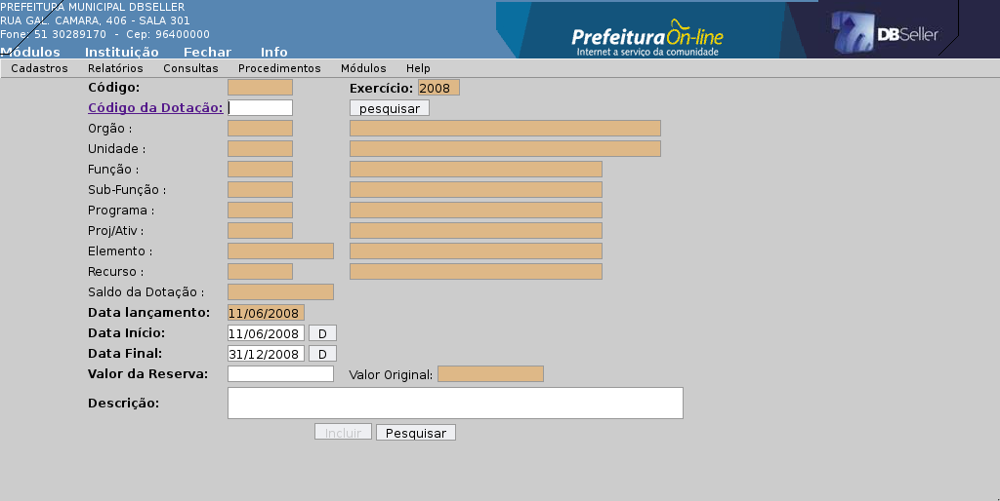
Figura
61
Esta opção, na aba Projeto, possibilita a descrição do projeto, o código da Lei , anteriormente cadastrada, e o tipo, ou seja se é Lei ou Decreto, após o preenchimento dos campos necessários, a inclusão através do clic no botão incluir, é liberada a aba Dados da Emissão, que possue campo que traz default o texto do art. 2, que poderá ou não ser alterado , ficando a cargo do usuário a utilização do mesmo.

Figura
62

Figura
63
Este procedimento abre a possibilidade de se efetuar alteração dos dados que foram anteriormente cadastrados no sistema. Pode-se digitar o código do projeto diretamente no campo apropriado ou localiza-lo em meio aos projetos incluídos e mostrados na tela inicial , clicando no projeto o sistema abrirá os campos que poderão ser alterados.

Figura
64
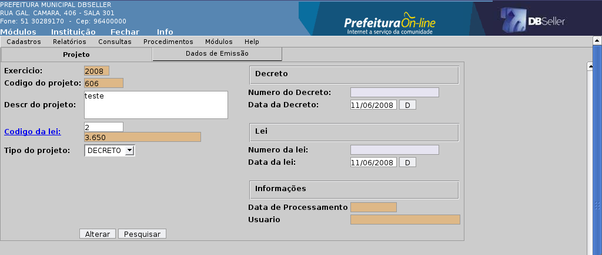
Figura
65
É nesta opção que, após incluso o projeto, efetua-se a manutenção das dotações que serão acrescidas de valores bem como das que serão reduzidas, caso seja crédito suplementar por redução, não sendo por redução, resta, arrecadação à maior, superávit financeiro, operação de crédito e auxílios e convênios, estando disponíveis as opções conforme o Tipo de suplementação escolhido na tela inicial da manutenção.
O primeiro campo a ser preenchido é o tipo de suplementação a ser utilizado, SUPLEMENTAÇÃO POR REDUÇÃO, ARRECADAÇÃO À MAIOR, OPERAÇÃO DE CRÉDITO, etc. Após clicar no botão Lançar Suplementação para que o sistema libere a tela seguinte que será utilizada para o cadastramento das opções que serão utilizadas.

Figura
66

Figura
67

Figura
68
Este procedimento executa o processo de suplementação propriamente dito, acrescentando os valores nas dotações que serão aumentadas, reduzindo as que serão utilizadas como cobertura ou executando o registro contábil na receita prevista para arrecadação a maior. A tela inicial mostra os projetos preparados para o processo, bastando a escolha do mesmo com um clic na respectiva linha, o que fará com que o sistema execute o passo seguinte que mostrará outra tela em que aparecerá os valores a serem registrados, optando por uma data de execução, fechando ou deixando em aberto o projeto que poderá ainda ser utilizado e marcando as linhas que possuem os valores que deverão ser suplementados. Para que a tarefa seja executada deve-se clicar no botão processar.

Figura
69

Figura
70
Este procedimento executa o desprocessamento dos projetos lançados, ou seja, é o processo inverso de suplementação, podendo ser executado a qualquer momento, sendo que o sistema não permitirá, somente se alguma das dotações envolvidas no processo e que foram aumentadas foi utilizada para empenhamento, pois caso contrário, a dotação ficaria negativa.

Figura
71
|
DBSeller Serviços de Informática LTDA. – www.dbseller.com.br Rua General Câmara, 406/301 – Porto Alegre – Fone: (51) 3028-9170 |
|